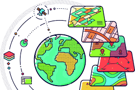
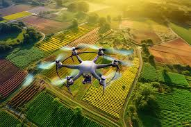

Hello there, I am Edwige Mukundane, a dedicated GIS specialist, Data Analyst, Remote sensing analyst and GIS web
application developer with 10 years of experience. My career path is one that has been marked by commitment and an unwavering
pursuit for growth and expertise.
I have worked on projects pertaining to tranport infrastructure feasibility studies, environmental impact assessments,
agriculture, energy, civil engineering projects, urban planning, public health, water and sanitation, rehabilitations
and humanitarian interventions. I have a great passion for exploring and transforming geographic data into meaningful results that facilitate informed decision making for a vast
of fields and I am constantly striving to increase my expertise in delivering advanced geospatial solutions to the ever-evolving geographical issues.
As part of my quest to becoming an expert in the geospatial field, I was privileged to get a full scholarship for the Master of Science in Geospatial Technologies program in 2019. This MSc program is a collaboration involving three institutions, i.e. the University of Münster in Germany, NOVA IMS -Univeridade Nova de Lisboa Portugal, and the University Jaume I in Spain. I gained a lot of knowledge through the program, expanding my expertise across various fields, including GIS, data science, and computer language programming. My final thesis was based on Urban traffic flow prediction using a spatial-temporal approach, this enriched my knowledge and proficiency in artificial intelligence, machine learning, and AI modules in Python programming.
Following my Graduation, I was privileged to work as a remote sensing Analyst with Spin Works, on their MAPP project. I contributed to several projects spanning Viticulture, Agriculture, Vegetation, water resources and Environmental Risk Mapping. My tasks involved applying remote sensing, data analysis, and machine learning concepts to process and analyse data for these projects to produce results and visualisations for actionable solutions. I later Joined Peroptyx as a geodata analyst, my work mainly involved data validation, analysis, and maintaining the data in geo databases and geo servers.
Prior to starting My Master’s degree, I worked with KOM Consult Ltd as a surveyor/GIS analyst and was later promoted to start and manage a new department in the company, the Survey and GIS unit. This was a major step in my career growth as this role brought me opportunities for business development, staff management, liaising with clients and stakeholders. As part of my business development achievements, I prepared bid documents including proposals and expressions of interest in projects. We were able to win two major government projects and one NGO funded project, all for which I was the project manager. My department was also responsible for providing GIS analysis and mapping input for projects handled by other company departments including the highways and transportation unit, Environment and Social services unit, water and sanitation unit and the Geotechnical services unit.
I recently started working as a research assistant with Dr. Chinekwu Obidoa a publishing researcher and a multi-disciplinary scholar at Mercer University. She currently has a lot of Spatial epidemiology research in the pipeline, and I am actively providing geospatial analysis. I help process, analyse, and visualize geospatial data. Today, I reflect upon my journey, and I am thankful for my accomplishments and the path I've traversed. My journey through life remains resolute in its commitment to excellence. I remain confident and ready to take on greater challenges and any future opportunities.